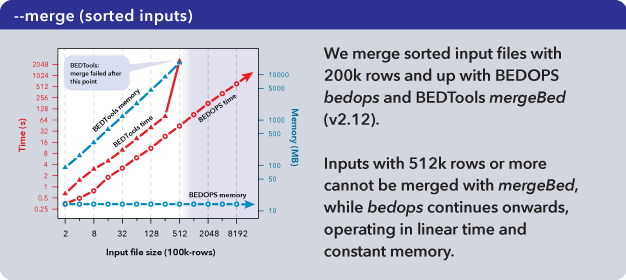
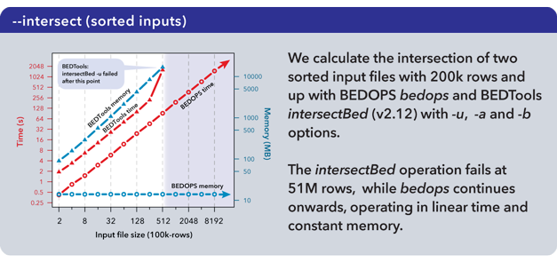
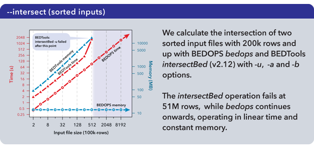
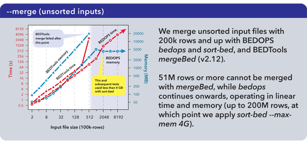
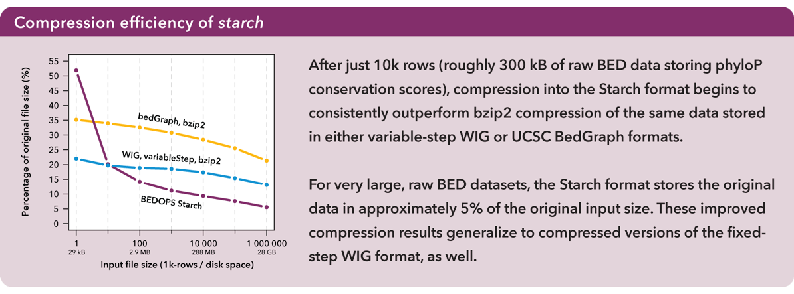
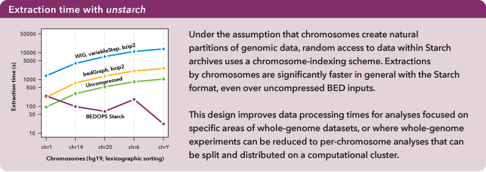
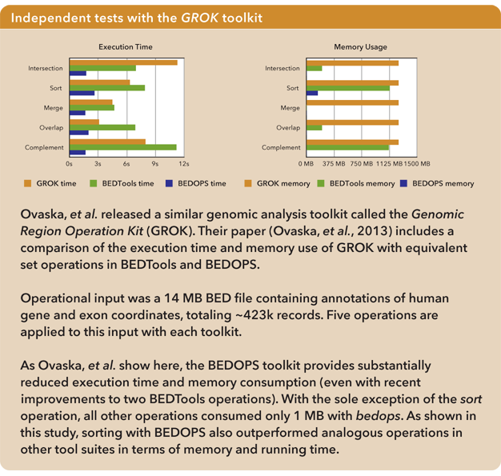

5. Performance¶
In this document, we compare the performance of our set operations and compression utilities with common alternatives. In-house performance measures include speed, memory usage, and compression efficiency on a dual-core machine with 18 GB of virtual memory. Additionally, we report independently-generated performance statistics collected by a research group that has recently released a similar analysis toolkit.
5.1. Test environment and data¶
Timed results were derived using actual running times (also known as wall-clock times), averaged over 3 runs. All timed tests were performed using a single 64-bit Linux machine with a dual-core 3 GHz Intel Xeon processor, 8 GB of physical RAM, and 18 GB of total virtual memory. All caches were purged in between sequential program runs to remove hardware biases.
Random subsamples of phyloP conservation for the human genome were used as inputs for testing whenever the full phyloP results were not used. The full phyloP results were downloaded from UCSC.
5.2. Set operations with bedops¶
In this section, we provide time and memory measurements of various bedops operations against analogous BEDTools utilities.
5.2.1. Direct merge (sorted)¶
The performance of the mergeBed program (with the -i option) from the BEDTools suite (v2.12.0) was compared with that of the --merge option of our bedops utility.
{kind=link}
As measured, the mergeBed program loads all data from a file into memory and creates an index before computing results, incurring longer run times and higher memory costs that can lead to failures. The bedops utility minimizes memory consumption by retaining only the information required to compute the next line of output.
5.2.2. Complement and intersection¶
The complementBed (with -i and -g options) and intersectBed (with -u, -a, and -b options) programs from the BEDTools suite (v2.12.0) also were compared to our bedops program.
 

{kind=link}
Both BEDTools programs were unable to complete operations after 51M elements with the allocated 18 GB of memory. The bedops program continued operating on the full dataset.
Important
It is our understanding that the BEDTools’ intersectBed program was modified to accept (optionally) sorted data for improved performance some time after these results were published.
A more recent study suggests bedops --intersect still offers better memory and running time performance characteristics than recent versions of BEDTools.
5.2.3. Direct merge (unsorted)¶
In typical pipelines, where utilities are chained together to perform more complex operations, the performance and scalability gaps between BEDOPS and competitive tool suites widen. We show here the use of sort-bed on unsorted BED input, piping it to BEDOPS tools:
{kind=link}
Time performance of bedops stays under that of mergeBed (BEDTools v2.12), while continuing past the point where mergeBed fails. Memory limitations of the system are easily overcome by using the --max-mem operator with sort-bed, allowing the --merge operation to continue unimpeded even with ever-larger unsorted BED inputs.
5.2.4. Discussion¶
The bedops utility performs a wide range of set operations (merge, intersect, union, symmetric difference, and so forth). As with all main utilities in BEDOPS, the program requires sorted inputs and creates sorted results on output. As such, sorting is, at most, a one-time cost to operate on data any number of times in the most efficient way. Also, as shown in an independent study, BEDOPS also sorts data more efficiently than other tools. Further, our utility can sort BED inputs of any size.
Another important feature of bedops that separates it from the competition is its ability to work with any number of inputs at once. Every operation (union, difference, intersection, and so forth) accepts an arbitrary number of inputs, and each input can be of any size.
5.3. Compression characteristics of starch¶
The starch utility offers high-quality BED compression into a format with a smaller footprint than common alternatives. The format is designed to help manage data bloat in this genomic era. Further, the format actually enables improved access times to the vast majority of datasets, as compared with raw (uncompressed) and naively-compressed data.
Here, we provide two measures of this format’s utility: comparing the compression efficiency of the bzip2-backed Starch format against common, “naive” bzip2-compression of UCSC BedGraph and WIG forms of BED data, and by comparing the time required to extract the records for any one chromosome from these formats as well as from a raw (uncompressed) BED file.
5.3.1. Compression efficiency¶
After just 10K rows (roughly 300 kB of raw BED data storing phyloP conservation scores), compression into the Starch format begins to consistently outperform bzip2 compression of the same data stored in either variable-step WIG or UCSC BedGraph formats.
{kind=link}
For very large raw BED datasets, the Starch format stores the original data in approximately 5% of the original input size. These improved compression results generalize to compressed versions of the fixed-step WIG format, as well. For more information, refer to the Supplemental Data in our Bioinformatics paper.
5.3.2. Extraction time¶
Data were sorted per sort-bed with chromosomes in lexicographical order. Extractions by chromosomes were significantly faster in general with the Starch format, even over raw (sequentially-processed) BED inputs:
{kind=link}
Under the assumption that chromosomes create very natural partitions of the data, the Starch format was designed using a chromosome-indexing scheme. This mechanism for random access further helps to improve data processing times within a clustered environment. Again, for more information, refer to the Supplemental Data in our Bioinformatics paper.
Important
Our bedextract program similarly makes it possible to extract data quickly by chromosome in any properly sorted BED file. However, for large (or many) data sets, deep compression has serious benefit. In our lab, more than 99% of all files are not touched (even) on a monthly basis—and new results are generated every day. Why would we want to keep all of that data in fully-bloated BED form? The workhorse programs of BEDOPS accept inputs in Starch format directly, just as they do raw BED files, to help manage ‘big data’.
5.4. Independent testing¶
5.4.1. Genomic Region Operation Kit (GROK)¶
Ovaska, et al. independently developed a genomic analysis toolkit called Genomic Region Operation Kit (GROK), which is described in more detail in their publication in IEEE/ACM Transactions on Computational Biology and Bioinformatics.
In it, they compare the performance characteristics of their GROK toolkit with their analogs in the BEDTools and BEDOPS suites, which they summarize as follows:
Results
Results of the benchmark analyses are shown in Table VII. GROK and BEDTools perform at comparable levels for speed and memory efficiency. In this benchmark BEDOPS is the fastest and least memory consuming method, which was expected due to performance optimized implementation of its operations 9. The optimized performance of BEDOPS, however, entails stronger assumptions for the input than GROK and BEDTools, in particular the requirement for pre-sorting the input BED files.
Operational input was a 14 MB BED file containing annotations of human gene and exon coordinates, totaling ~423k records. We summarize the results of operations on that input here:
{kind=link}
Remember that with BEDOPS, sorting is, at most, a one-time cost to operate on data any number of times in the most efficient way. Since the programs in BEDOPS produce sorted outputs, you never need to sort results before using them in downstream analyses.
5.5. Worst-case memory performance¶
Non-sorting utilities operate efficiently with large inputs by keeping memory overhead low. The worst-case design scenario, however, causes the bedops or bedmap programs to load all data from a single chromosome from a single input file into memory. For bedops, the worst-case scenario applies only to the --element-of and --not-element-of options.
Fortunately, worst-case situations are conceptually easy to understand, and their underlying questions often require no windowing logic to answer, so simpler approaches can sometimes be used. Conceptually, any summary analysis over an entire chromosome triggers the worst-case scenario. For example, to determine the number of sequencing tags mapped to a given chromosome, bedmap loads all tag data for that one chromosome into memory, whereas a one-line awk statement can provide the answer with minimal memory overhead.
We note that the worst case memory performance of non-sorting BEDOPS utilities still improves upon the best case performance of current alternatives.